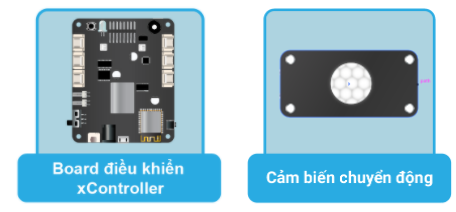
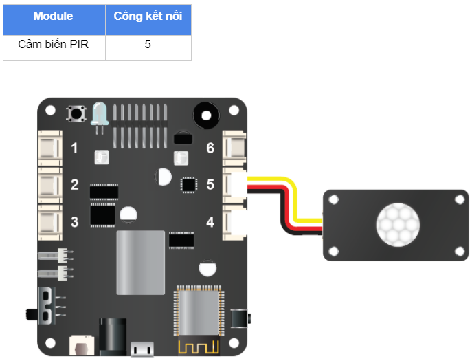

Project 4: Hệ thống chống trộm và báo động
Mục tiêu
Ngôi nhà nào cũng cần phải đảm bảo sự an toàn cho chủ nhân của nó, đúng không nào? Trong project này, chúng ta sẽ làm cho ngôi nhà trở nên an toàn hơn bằng cách xây dựng hệ thống an ninh: tự động hú còi báo động và chớp đèn liên tục khi phát hiện có sự xâm nhập trái phép.
Hệ thống này sẽ hoạt động kết với hợp remote điều khiển như sau:
Bật chế độ bảo vệ bằng nút nhấn tích hợp trên hộp điều khiển xController
Khi chế độ bảo vệ được bật, nếu phát hiện có sự chuyển động thì sẽ tự động hú còi cảnh báo và chớp đèn liên tục trong vòng 5 giây.
Thiết bị cần sử dụng
{kind=link}
Kết nối phần cứng
{kind=link}
Viết chương trình
Mở phần mềm Arduino IDE.
Copy đoạn code sau, click vào nút Verify để kiểm tra lỗi chương trình. Sau khi biên dịch không báo lỗi, bạn có thể nạp đoạn code vào board.
#include <xcontroller.h>
#define BUZZER_CHANNEL 0 // any from 0-15
#define PIR_PIN D5_1
XController xcon;
bool alarmMode = false;
int pirState = 0;
void setup() {
Serial.begin(9600);
pinMode(PIR_PIN, INPUT);
pinMode(BUTTON, INPUT);
}
void loop() {
if (digitalRead(BUTTON) == LOW) {
// bật tắt chế độ bảo vệ
alarmMode = !alarmMode;
if (alarmMode) {
Serial.println("Chế độ bảo vệ được bật");
} else {
Serial.println("Chế độ bảo vệ được tắt");
}
delay(200);
}
pirState = digitalRead(PIR_PIN);
if (alarmMode && pirState == HIGH) {
Serial.println("Phát hiện có người xâm nhập");
for (int i=0; i<5; i++) {
xcon.showLED(0, 255, 0, 0);
xcon.tone(NOTE_C4, 1000, BUZZER_CHANNEL);
xcon.noTone(BUZZER_CHANNEL);
xcon.showLED(0, 0, 0, 0);
delay(1000);
}
}
}
Giải thích chương trình
Trong chương trình trên, chúng ta khai báo biến alarmMode kiểu bool (có giá trị true hoặc false) để lưu trạng thái bật tắt của chế độ bảo vệ. Chế độ này sẽ bật/tắt khi nút trên board được nhấn.
Nếu chế độ này đang được bật, đồng thời phát hiện có sự chuyển động thì ngôi nhà sẽ nháy đèn LED RGB và phát âm thanh báo động 5 lần, đủ để cho kẻ trộm chạy mất và chủ nhà thức giấc.